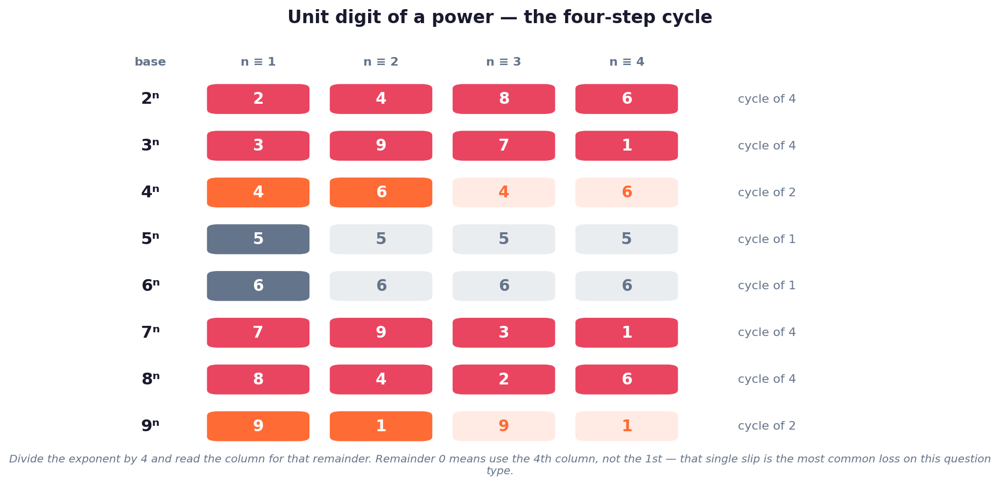

HOW TO USE THIS PAGEQuant is not a reading subject. The ten marks in this
section come from recall speed, not understanding — you either know the divisibility rule and the unit-digit cycle
cold, or you lose the mark to the clock. Read the formula sheet once, then spend your time on the worked examples
and the 30 questions. With −⅓ negative marking, a calculated skip beats a hopeful guess.
A. Classification of numbers
Type
Definition
Watch out
Natural
1, 2, 3, …
Starts at 1, not 0
Whole
0, 1, 2, 3, …
Natural numbers plus zero
Integers
… −2, −1, 0, 1, 2 …
No fractions
Rational
Expressible as p/q, q ≠ 0
Includes terminating and recurring decimals
Irrational
Non-terminating, non-recurring
√2, π, e. Note √4 = 2 is rational
Prime
Exactly two factors, 1 and itself
1 is not prime. 2 is the only even prime
Composite
More than two factors
1 is neither prime nor composite
Co-prime
HCF of the pair is 1
Need not be prime themselves — 8 and 15 are co-prime
B. BODMAS — the order of operations
Brackets → Orders (powers, roots) → Division and Multiplication
(left to right) → Addition and Subtraction (left to right).
🧠 The one rule people get wrong: division does not come after multiplication, and addition
does not come after subtraction. Each pair ranks equally and is resolved left to right.
In 12 + 6 ÷ 2 × 3, do 6 ÷ 2 = 3 first, then 3 × 3 = 9 — never 2 × 3 first.
C. Divisibility rules
Divisor
Test
Example
2
Last digit even
3 784 ✔
3
Digit sum divisible by 3
1 2 3 → 6 ✔
4
Last two digits divisible by 4
9 316 ✔
5
Ends in 0 or 5
4 3 5 ✔
6
Divisible by 2 and 3
4 3 2 ✔
8
Last three digits divisible by 8
3 792 ✔
9
Digit sum divisible by 9
4 5 6 7 8 → 30 ✘
10
Ends in 0
1 2 0 ✔
11
Difference of alternate digit sums is 0 or a multiple of 11
1 0 0 0 0 1 → 1 − 1 = 0 ✔
🧠 Depth of the tail: 2 needs 1 digit, 4 needs 2, 8 needs
3 — the power of 2 tells you how many digits to inspect. Same for 5, 25, 125.
D. LCM and HCF
HCF — common primes at their lowest powers. The biggest number that divides all of them.
LCM — all primes at their highest powers. The smallest number they all divide.
For two numbers only:HCF × LCM = product of the two numbers. This fails for three or more.
Most marks in this area are lost by picking the wrong tool, not by miscalculating. Read the verb: things
recurring point to LCM, something being shared or cut points to HCF.
Problem wording
Method
Least number leaving the same remainder r
LCM + r
Least number leaving remainders where divisor − remainder is constant (= k)
LCM − k
Greatest number leaving the same unknown remainder
HCF of the differences
Greatest number leaving stated remainders
HCF after subtracting each remainder
Bells, lights, runners meeting again
LCM
Largest tile, rope length, equal groups
HCF
E. Unit digits, remainders and trailing zeros

Divide the exponent by 4 and read the matching column. A remainder of 0 means the cycle has just
completed, so take the fourth entry — this is where most candidates drop the mark.
Trailing zeros in n! — count factors of 5: ⌊n/5⌋ + ⌊n/25⌋ + ⌊n/125⌋ + … Factors of 2 are always in surplus.
Remainder cycles — powers modulo a fixed divisor repeat; find the period, then reduce the exponent.
Number of factors — if N = pa·qb·rc, the count of factors is (a+1)(b+1)(c+1).
Sum of first n naturals = n(n+1)/2; sum of squares = n(n+1)(2n+1)/6.
PYQ ALERTWhat BPSC actually asks here. Across the 69th–71st papers the
recurring shapes are: a BODMAS simplification with division before multiplication; an LCM word problem dressed up as
bells or runners; "same remainder" phrasing that needs LCM + r; a divisibility rule stated as a definition (11 is the
favourite); and a unit-digit or trailing-zeros question. Between them these cover almost every quant mark on offer.
📊 Fact Matrix — Formula Sheet
Need
Formula
HCF and LCM of two numbers
HCF × LCM = a × b (two numbers only)
Number of factors of N = paqb
(a+1)(b+1)
Sum of first n naturals
n(n+1)/2
Sum of first n odd numbers
n²
Sum of first n even numbers
n(n+1)
Sum of squares of first n naturals
n(n+1)(2n+1)/6
Sum of cubes of first n naturals
[n(n+1)/2]²
Trailing zeros in n!
⌊n/5⌋ + ⌊n/25⌋ + ⌊n/125⌋ + …
Dividend
divisor × quotient + remainder
Least number to ADD for divisibility by d
d − (N mod d)
Least number to SUBTRACT for divisibility by d
N mod d
Least number, same remainder r on all divisors
LCM + r
Least number, constant (divisor − remainder) = k
LCM − k
Greatest number, same unknown remainder
HCF of the differences
HCF of fractions
HCF(numerators) / LCM(denominators)
LCM of fractions
LCM(numerators) / HCF(denominators)
✏️ Ten Worked Examples
1Simplify 48 ÷ 6 × 2 + 15 − 3 × 4
Division and multiplication rank equally and are done left to right: 48 ÷ 6 = 8, then 8 × 2 = 16. Next 3 × 4 = 12. So the expression is 16 + 15 − 12 = 19.
⚠ Doing 6 × 2 first gives 48 ÷ 12 = 4 and the wrong answer 7.
2Find the LCM and HCF of 24 and 36, then verify the product rule.
4Find the greatest number that divides 62, 132 and 237 leaving the same remainder.
The remainder is unknown but equal, so work with differences: 132 − 62 = 70, 237 − 132 = 105, 237 − 62 = 175. HCF(70, 105, 175) = 35.
⚠ Each leaves remainder 27. When the remainder is stated, subtract it first; when it is merely 'the same', use differences.
5What is the unit digit of 374?
Powers of 3 cycle 3, 9, 7, 1 with period 4. 74 ÷ 4 leaves remainder 2, so the unit digit is the 2nd in the cycle, 9.
⚠ If the remainder had been 0 you would take the fourth entry, not the first.
6Find the remainder when 340 is divided by 5.
Powers of 3 modulo 5 cycle 3, 4, 2, 1 with period 4. 40 ÷ 4 leaves remainder 0, so we take the last entry: 1.
⚠ Remainder 0 means the cycle has just completed — a very common one-step error.
7How many zeros are at the end of 100! ?
Count the factors of 5: ⌊100/5⌋ = 20, ⌊100/25⌋ = 4, ⌊100/125⌋ = 0. Total 24.
⚠ Factors of 2 always outnumber factors of 5, so only the 5s need counting.
8Find the smallest number that must be subtracted from 2000 to make it divisible by 17.
2000 ÷ 17 = 117 remainder 11, so subtract 11. (To make it divisible by adding, you would add 17 − 11 = 6.)
⚠ Read the direction carefully — 'subtract' takes the remainder, 'add' takes divisor minus remainder.
9Is 1,00,001 divisible by 11?
Alternate digits: odd places 1 + 0 + 0 = 1; even places 0 + 0 + 1 = 1. Difference 0, which is a multiple of 11, so yes.
⚠ Start counting places from the right; direction does not change the result, but stay consistent.
10Two runners circle a track in 126 s and 154 s. When do they next meet at the start?
They meet after LCM(126, 154) seconds. 126 = 2·3²·7, 154 = 2·7·11, so LCM = 2·3²·7·11 = 1386 s = 23 min 6 s.
⚠ 'Meet again at the start' is always LCM. HCF would answer a cutting-into-equal-parts question.
🔶 Bihar Connection
🟠 What Bihar-specific means in a quant section
Arithmetic carries no state-specific content — a divisibility rule is the same in Patna as anywhere else. This is the one topic group where the Bihar angle is about marks strategy, not facts.
BPSC sets easier quant than SSC or banking. The 69th–71st papers stayed at school arithmetic — no advanced algebra, no coordinate geometry. Preparing from an SSC book over-prepares you and wastes hours you owe to Bihar-specific GS.
Roughly 10 of 150 marks. These are the most reliably scorable marks on the paper: no current affairs to go stale, no ambiguity, no debatable answer key.
Bihar-flavoured numbers do occasionally appear as dressing — district counts (38), Vidhan Sabha seats (243), Lok Sabha seats (40) — but the arithmetic is the question, not the fact.
With ⅓ negative marking and a two-hour limit for 150 questions, quant is where time discipline decides the outcome. If a question is not yielding in 60 seconds, leave it and return.
🔗 Cross-Topic Connections
↔ Topic #51 (Percentage): fractions and ratios rest on the LCM/HCF work here ↔ Topic #52 (Ratio & Proportion): simplifying ratios is an HCF operation ↔ Topic #53 (Average): weighted averages need clean fraction handling ↔ Topic #55 (SI & CI): compound interest is repeated multiplication — the power rules here ↔ Topic #56 (Time & Work): the classic pipes-and-cisterns setup is an LCM technique ↔ Topic #57 (Speed, Time & Distance): circular-track meeting problems are LCM problems ↔ Topic #58 (Number/Letter Series): pattern recognition builds on factors and multiples
📰 Current Relevance & Exam Strategy
Arithmetic does not date, so nothing in this topic goes stale between now and the exam — unlike the current-affairs
block, this page will still be correct whenever the postponed paper is finally held. What changes is only the
pattern of what BPSC chooses to ask.
Observation across 69th–71st
What to do about it
Quant stayed at school level; no algebra-heavy items
Do not over-prepare from SSC material
⅓ negative marking introduced in the 71st
Skip rather than guess; two skips cost less than three wrong
Word problems dominate over bare computation
Practise translating wording into LCM/HCF, not just calculating
Roughly 10 quant marks per paper
Budget about 12 minutes of the 120 for this section
🎯 Top 5 predictions for the 72nd — Number System:
(1) BODMAS simplification (HIGH): one expression where division precedes multiplication left to right.
(2) LCM word problem (HIGH): bells, lights or runners coinciding — answer is plain LCM.
(3) Same-remainder problem (MEDIUM–HIGH): "leaves remainder 5 in each case" → LCM + 5.
(4) Divisibility rule as a definition (MEDIUM): the rule for 11 stated four ways, one correct.
(5) Unit digit or trailing zeros (MEDIUM): a large power's last digit, or the zeros in a factorial.
✍️ MCQ Practice Set — 30 Questions
Every answer key on this page was computed
programmatically, not written by hand — the arithmetic is verified, not trusted. Attempt under time, then read
the explanations for the questions you missed.
Q1. Simplify: 12 + 6 ÷ 2 × 3 − 4
✅ Correct Answer: (D) — BODMAS resolves division and multiplication left to right, not division last. 6 ÷ 2 = 3, then 3 × 3 = 9, giving 12 + 9 − 4 = 17. Trap 23 comes from running everything left to right including the addition: (12 + 6) ÷ 2 × 3 − 4. Trap 11 comes from doing 6 ÷ 2 = 3 and then forgetting to multiply by 3.
Q2. Simplify: (18 − 3) × 2 + 36 ÷ 6
✅ Correct Answer: (A) — Brackets first: 18 − 3 = 15. Then 15 × 2 = 30 and 36 ÷ 6 = 6, so 30 + 6 = 36. Trap 24 comes from subtracting the 6 instead of adding it (30 − 6). Nothing here is division-first: the bracket must be cleared before the multiplication.
Q3. Simplify: 5 + 3 × (8 − 2) ÷ 4
✅ Correct Answer: (C) — Bracket first: 8 − 2 = 6. Then 3 × 6 = 18 and 18 ÷ 4 = 4.5, so 5 + 4.5 = 9.5. Trap 6.5 drops the ×3 and computes 5 + 6 ÷ 4. Trap 8 is simply 5 + 3, abandoning the rest of the expression.
Q4. The LCM of 12, 15 and 20 is:
✅ Correct Answer: (A) — 12 = 2²·3, 15 = 3·5, 20 = 2²·5. Taking the highest power of each prime: 2²·3·5 = 60. 120 and 180 are common multiples but not the least — the question asks for the smallest.
Q5. The HCF of 48, 72 and 96 is:
✅ Correct Answer: (D) — 48 = 2⁴·3, 72 = 2³·3², 96 = 2⁵·3. Common primes at their lowest powers: 2³·3 = 24. 48 divides 48 and 96 but not 72, so it cannot be the HCF of all three.
Q6. For 36 and 84, the product HCF × LCM equals:
✅ Correct Answer: (A) — For any two numbers, HCF × LCM = product of the numbers. Here 36 × 84 = 3024, and indeed HCF = 12 and LCM = 252 give 12×252 = 3024. The identity is guaranteed only for a pair — it does not hold in general for three or more numbers, which is the usual trap.
Q7. Find the least number greater than 5 which, when divided by 6, 8 and 12, leaves remainder 5 in each case.
✅ Correct Answer: (C) — When the remainder is the same each time, the answer is LCM + common remainder. LCM(6, 8, 12) = 24, so the number is 24 + 5 = 29. Choosing 24 forgets the remainder; 53 is the next such number, not the least. The stem says 'greater than 5' because 5 itself trivially leaves remainder 5 on all three divisors.
Q8. The greatest number that divides 43, 91 and 183 leaving the same remainder in each case is:
✅ Correct Answer: (A) — When the remainder is the same but unknown, take the HCF of the differences. 91 − 43 = 48, 183 − 91 = 92 and 183 − 43 = 140; HCF(48, 92, 140) = 4. Working with the numbers themselves instead of their differences is the common mistake.
Q9. Three bells ring at intervals of 4, 6 and 9 minutes. If they ring together at 10:00 a.m., they will next ring together at:
✅ Correct Answer: (B) — They coincide after LCM(4, 6, 9) = 36 minutes, i.e. at 10:36 a.m. 10:18 is only a common multiple of 6 and 9, and 10:24 only of 4 and 6 — neither satisfies all three.
Q10. A number is divisible by 11 if:
✅ Correct Answer: (D) — The rule for 11 uses alternating digit sums: add the digits in odd places, add those in even places, and the difference must be 0 or a multiple of 11. Digit-sum rules belong to 3 and 9; last-two-digits belongs to 4.
Q11. Which of the following numbers is divisible by 8?
✅ Correct Answer: (C) — For 8, only the last three digits matter: 792 ÷ 8 = 99 exactly. 798, 794 and 790 leave remainders 6, 2 and 6. Checking the whole number is unnecessary once the last three digits are settled.
Q12. If the six-digit number 4_5678 is to be divisible by 9, the missing digit is:
✅ Correct Answer: (C) — For divisibility by 9 the digit sum must be a multiple of 9. Known digits sum to 4+5+6+7+8 = 30, and the next multiple of 9 is 36, so the missing digit is 6. The other options give digit sums of 32, 34 and 38 — none a multiple of 9. Applying the looser rule for 3 would wrongly accept several of them.
Q13. The largest four-digit number exactly divisible by 88 is:
✅ Correct Answer: (B) — 9999 ÷ 88 = 113 remainder 55, so the largest multiple is 113 × 88 = 9944. 9988 is divisible by 11 and by 4 separately but 9988 ÷ 88 is not an integer — a good reminder that divisibility by 8 and 11 is required, not 4 and 11.
Q14. The unit digit of 7¹⁰⁵ is:
✅ Correct Answer: (B) — Unit digits of powers of 7 cycle 7, 9, 3, 1 with period 4. 105 ÷ 4 leaves remainder 1, so the unit digit matches 7¹, which is 7. Taking the remainder as 0 and answering 1 is the standard slip.
Q15. The remainder when 2⁵⁰ is divided by 7 is:
✅ Correct Answer: (B) — Powers of 2 modulo 7 cycle 2, 4, 1 with period 3. 50 ÷ 3 leaves remainder 2, so 2⁵⁰ ≡ 2² = 4 (mod 7). Answering 1 assumes the cycle closes exactly at 50, which it does not.
Q16. The number of zeros at the end of 25! is:
✅ Correct Answer: (A) — Count factors of 5: ⌊25/5⌋ = 5 and ⌊25/25⌋ = 1, giving 6. Answering 5 misses the extra 5 contributed by 25 itself, which is 5². Factors of 2 are always in surplus, so only 5s need counting.
Q17. How many prime numbers are there between 1 and 50?
✅ Correct Answer: (B) — There are 15: 2, 3, 5, 7, 11, 13, 17, 19, 23, 29, 31, 37, 41, 43, 47. Counting 1 as prime gives the trap 16 — 1 is neither prime nor composite.
Q18. The smallest number that must be added to 1056 to make it exactly divisible by 23 is:
✅ Correct Answer: (A) — 1056 ÷ 23 = 45 remainder 21, so 23 − 21 = 2 must be added. Subtracting the remainder instead of completing to the next multiple gives the wrong direction.
Q19. Which of the following is a composite number?
✅ Correct Answer: (B) — 91 = 7 × 13, so it is composite. 89, 97 and 83 are all prime. 91 is the classic trap because it looks prime and fails only the 7-test.
Q20. The HCF of two numbers is 12 and their LCM is 240. If one number is 48, the other is:
✅ Correct Answer: (B) — Since HCF × LCM = product of the numbers, the other number is (12 × 240) / 48 = 60. Note the check: HCF(48, 60) = 12 and LCM(48, 60) = 240, so the pair is consistent.
Q21. The least number divisible by every integer from 1 to 10 is:
✅ Correct Answer: (C) — Take the highest power of each prime up to 10: 2³ · 3² · 5 · 7 = 2520. 5040 is 7! and is a multiple, but not the least. 1260 fails on 8.
Q22. A number when divided by 342 gives remainder 47. When the same number is divided by 19, the remainder is:
✅ Correct Answer: (C) — 342 = 19 × 18, so the number is 342k + 47 = 19(18k + 2) + 9, leaving remainder 9. Trap 0 comes from noticing that 19 divides 342 and stopping there, forgetting that the +47 still has to be reduced: 47 = 19×2 + 9.
Q23. Simplify: 0.4 × 0.04 × 0.004
✅ Correct Answer: (B) — Multiply the digits, 4 × 4 × 4 = 64, then count decimal places: 1 + 2 + 3 = 6, giving 0.000064. Miscounting the places by one is the entire difficulty of this question type.
Q24. If x is the smallest number which when divided by 5, 7 and 9 leaves remainders 3, 5 and 7 respectively, then x is:
✅ Correct Answer: (C) — In each case divisor − remainder = 2, so the number is LCM(5, 7, 9) − 2 = 315 − 2 = 313. Recognising the constant difference is what turns a long trial into one line.
Q25. The value of √(0.0169) is:
✅ Correct Answer: (D) — 0.0169 = 169 / 10000, so the root is 13 / 100 = 0.13. The rule is that a square root halves the number of decimal places, so four places become two. Trap 0.0013 keeps all four places; trap 1.3 halves the digits but loses a place entirely.
Q26. Which pair of numbers is co-prime?
✅ Correct Answer: (A) — Co-prime means HCF = 1. HCF(8, 15) = 1. The others share a factor: 3 for 9 and 21, 7 for 14 and 35, 6 for 12 and 18. Co-prime numbers need not themselves be prime — 8 and 15 are both composite.
Q27. The sum of the digits of the smallest 4-digit number divisible by 4, 5 and 6 is:
✅ Correct Answer: (D) — LCM(4, 5, 6) = 60, and the smallest 4-digit multiple of 60 is 1020, whose digits sum to 1 + 0 + 2 + 0 = 3. Starting from 1000 itself, which is not divisible by 6, is the usual error.
Q28. If 5⁴ˣ = 625, then the value of x is:
✅ Correct Answer: (A) — 625 = 5⁴, so 4x = 4 and x = 1. Answering 4 solves for the exponent rather than for x — the question asks for x itself.
Q29. The place value of 7 in 4,73,829 is:
✅ Correct Answer: (D) — 7 sits in the ten-thousands place of 4,73,829, so its place value is 7 × 10,000 = 70,000. Its face value, by contrast, is simply 7 — the distinction BPSC likes to test.
Q30. How many numbers strictly between 200 and 600 (excluding both) are divisible by 4, 5 and 6 together?
✅ Correct Answer: (D) — A number divisible by 4, 5 and 6 is divisible by their LCM, 60. Strictly between 200 and 600 the multiples are 240, 300, 360, 420, 480 and 540 — six of them. 600 is itself a multiple of 60, so an inclusive reading would give seven; the stem excludes both endpoints for exactly that reason.